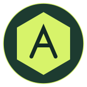

۸ دقیقه مطالعه · استانبول
راهنمای سفر به استانبول؛ از بسفر تا محلههای تاریخی
برای شناخت محلهها، حملونقل، جاذبهها و برنامهریزی چند روز اقامت در استانبول.
ادامه مطلب ↙از اولین ایده تا لحظه رسیدن؛ مسیر سفرت را با خیال راحت پیدا کن.
سفرم را برنامهریزی میکنم ↙جستوجو در این نسخه نمایشی است و هنوز به سامانه رزرو متصل نشده است.
از جابهجایی تا اقامت و تجربههای مقصد، خدمات موردنیازت را در یک مسیر ساده کنار هم پیدا کن.
پروازهای داخلی و خارجی را برای مسیر و زمان دلخواهت بررسی کن.
جستوجوی پرواز ↙سفر ریلی، راحت و تماشایی؛ برای مسیرهای کوتاه و بلند.
انتخاب مسیر ↙02مسیرهای جادهای و گزینههای متنوع سفر بینشهری.
دیدن مسیرها ↙03از هتل شهری تا اقامتگاه بومگردی، جای ماندنت را پیدا کن.
کشف اقامتگاهها ↙04برای سفرهای برنامهریزیشده، گروهی یا ماجراجویانه.
دیدن تورها ↙05بیمه، ویزا، ترانسفر، اجاره خودرو و تجربههای مقصد.
همه خدمات ↙06برای آسودگی بیشتر، خدمات تکمیلی را هم در برنامهات در نظر بگیر.
با آمادگی بیشتر، آسودهتر سفر کن.
شرایط ورود و مدارک مقصد را بررسی کن.
از فرودگاه تا محل اقامت، راحتتر برس.
برای کشف مقصد با آزادی بیشتر.
از آرامش ساحل تا کشف فرهنگهای تازه، سفر را شبیه خودت انتخاب کن.
برای شناخت محلهها، حملونقل، جاذبهها و برنامهریزی چند روز اقامت در استانبول.
ادامه مطلب ↙
TRAVELراوین برای سادهتر کردن انتخاب و الهامبخشیدن به کشف جهان ساخته شده است؛ تجربهای که اطلاعات، ایدهها و خدمات سفر را کنار هم میآورد.
در این نمونه، خدمات پرواز، قطار، اتوبوس، اقامت، تور و خدمات تکمیلی سفر معرفی شدهاند.
خیر. این نسخه یک نمونه نمایشی Frontend است و هنوز به تامینکنندگان بلیط یا درگاه پرداخت متصل نیست.
با توجه به بودجه، فصل سفر، مدت اقامت و سبک تجربه مورد علاقهات مقصدها را مقایسه کن.